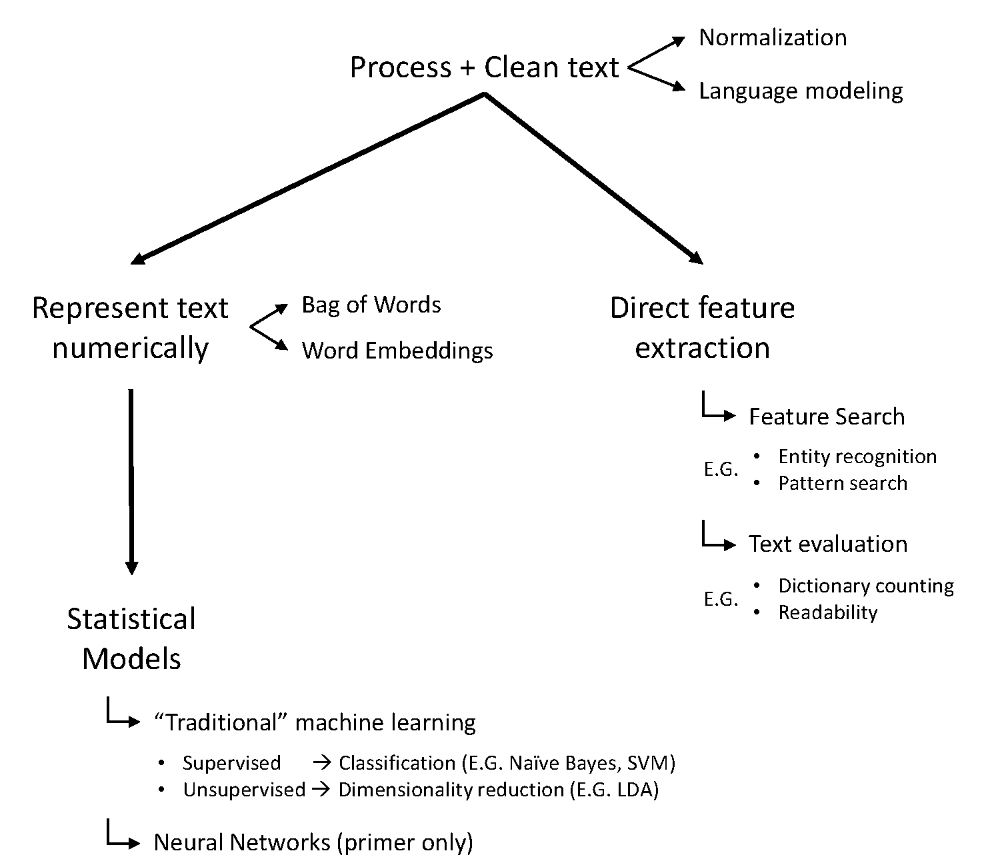
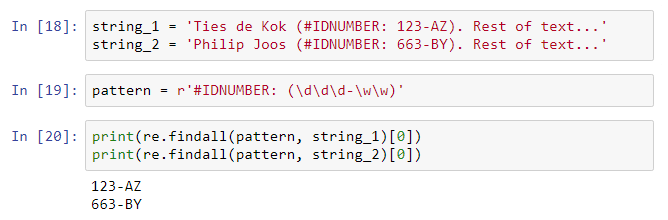
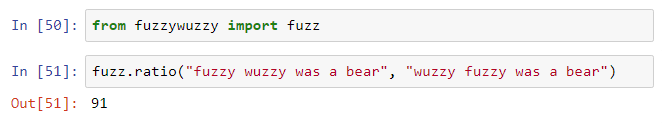

class: center, titleslide <br><br> # Text Mining Techniques # Accounting Research <br> ## <a href="http://www.tiesdekok.com" target="_blank">Ties de Kok</a> ## Tilburg University --- layout: true class: mainlayout <div class='custom_footer'><span>Text Mining (NLP) for Accounting Research | Ties de Kok (© 2017)</span></div> --- class: tocslide .left-column[ ## Agenda ] .right-column[ ### What are we going to discuss today? 1. Positioning session 2. Terminology 3. Language 4. Jupyter 5. NLP Python tools 6. Topics: - Process and Clean text - Direct feature extraction - Represent text numerically - Statistical Analysis ] --- class: tocslide .left-column[ ## Agenda ## Positioning ] .right-column[ ### Where does this session fit into the bigger scheme of NLP? - Relevance textual data - Sources textual data - Gathering textual data <span style="padding-left: 20px" class="arrow-right"></span> .emphasized[Processing textual data] <span style="padding-left: 20px" class="arrow-right"></span> .emphasized[Analyzing textual data] - Include into main statistical analysis ] --- class: tocslide .left-column[ ## Agenda ## Positioning ## Terminology ] .right-column[ ### Many inter-related names and terms: - Computational Linguistics - Textual Analysis <span style="padding-left: 20px" class="arrow-right"></span> .emphasized[Text Mining] <span style="padding-left: 20px" class="arrow-right"></span> .emphasized[Natural Language Processing] ] --- class: tocslide .left-column[ ## Agenda ## Positioning ## Terminology ## Language ] .right-column[ ### Which programming language / software to use? <span style="padding-left: 20px" class="arrow-right"></span> .emphasized[Python] - R - PERL <br><br> To get started with the Python basics see my [Python Tutorial](https://github.com/TiesdeKok/LearnPythonforResearch) ] --- class: tocslide .left-column[ ## Agenda ## Positioning ## Terminology ## Language ## Jupyter ] .right-column[ ### Project Jupyter <div style="text-align: center;"> <img src="images/Jupyter_Screenshot.PNG", width=85%> <a class="orange-button" href="https://try.jupyter.org/" target="_blank">Try it in your browser</a> <a class="orange-button install-button" href="http://jupyter.org/install.html">Install the Notebook</a> </div> ] --- class: tocslide .left-column[ ## Agenda ## Positioning ## Terminology ## Language ## Jupyter ## NLP Python ] .right-column[ ### External NLP-relevant Python libraries **Standard NLP libraries**: 1. [`NLTK`](http://www.nltk.org/) and the higher-level wrapper [`TextBlob`](https://textblob.readthedocs.io/en/dev/) 2. [`Spacy`](https://spacy.io/) and the higher-level wrapper [`Textacy`](https://github.com/chartbeat-labs/textacy) **Standard machine learning library**: 1. [`scikit learn`](http://scikit-learn.org/stable/) **Topic modelling libraries**: 1. [`Gensim`](https://github.com/RaRe-Technologies/gensim) 2. [`FastText`](https://github.com/salestock/fastText.py) ] --- class: tocslide .left-column[ ## Agenda ## Positioning ## Terminology ## Language ## Jupyter ## NLP Python ## Topics ] .right-column[  ] --- class: tocslide .left-column[ ## Process <br> & Clean ] .right-column[ ### Text normalization - Deal with unwanted characters > i.e. remove unwanted unicode characters - Sentence segmentation > i.e. split text up into sentences - Word tokenization > i.e. split sentence up into tokens (i.e. words) - Entity normalization > i.e. "$2.50" → "two dollars and fifty cents" - Lemmatization & Stemming ] --- class: tocslide .left-column[ ## Process <br> & Clean ] .right-column[ ###<span style="padding-left: 15px">Lemmatization & Stemming</span> <div style="position: relative; top: -40px" > <img style="padding-top: 20px; padding-bottom: 10px;" src="images/StackOverflow_Stemming.PNG", width=70%><br> Example: <br> <img style="position: relative; left: +60px; padding-top: 10px" src="images/StemmingvsLemma.PNG", width=60%> </div> ] --- class: tocslide .left-column[ ## Process <br> & Clean ] .right-column[ ### Language modelling Text has a complex underlying structure that you can tap into. - Part-of-Speech tagging > Identify the "Word Class" of a token (e.g. noun, verb) - Stop words > Words that don't carry any informational value - Uni-Gram vs. N-Grams > Multi-word token: retain some of the sequential nature ] --- class: tocslide .left-column[ ## Process <br> & Clean ] .right-column[ ###<span style="padding-left: 15px">Uni-Gram vs. N-Grams</span> > Multi-word token: retain some of the sequential nature <span style='display:block; text-align: center'>"Tilburg University is located in Noord Brabant"</span> <style type="text/css"> .tg {border-collapse:collapse;border-spacing:0;margin:0px auto;} .tg td{font-family:Arial, sans-serif;font-size:14px;padding:2px 50px;border-style:solid;border-width:1px;overflow:hidden;word-break:normal; text-align: center} .tg th{font-family:Arial, sans-serif;font-size:14px;font-weight:normal;padding:10px 5px;border-style:solid;border-width:1px;overflow:hidden;word-break:normal; font-weight: bold} .tg .tg-yw4l{vertical-align:top} </style> <table class="tg"> <tr> <th class="tg-yw4l">Unigram</th> <th class="tg-yw4l">Bigram</th> <th class="tg-yw4l">Trigram</th> </tr> <tr> <td class="tg-yw4l">Tilburg</td> <td class="tg-yw4l">Tilburg-University</td> <td class="tg-yw4l">Tilburg-University-is</td> </tr> <tr> <td class="tg-yw4l">University</td> <td class="tg-yw4l">University-is</td> <td class="tg-yw4l">University-is-located</td> </tr> <tr> <td class="tg-yw4l">is</td> <td class="tg-yw4l">is-located</td> <td class="tg-yw4l">is-located-in</td> </tr> <tr> <td class="tg-yw4l">located</td> <td class="tg-yw4l">located-in</td> <td class="tg-yw4l">located-in-Noord</td> </tr> <tr> <td class="tg-yw4l">in</td> <td class="tg-yw4l">in-Noord</td> <td class="tg-yw4l">in-Noord-Brabant</td> </tr> <tr> <td class="tg-yw4l">Noord</td> <td class="tg-yw4l">Noord-Brabant</td> <td class="tg-yw4l"></td> </tr> <tr> <td class="tg-yw4l">Brabant</td> <td class="tg-yw4l"></td> <td class="tg-yw4l"></td> </tr> </table> ] --- class: tocslide .left-column[ ## Process <br> & Clean ## Feature Extraction ] .right-column[ ### Feature search * Entity extraction > e.g. extract PEOPLE / EVENTS / DATES / MONETARY VALUES * Pattern search (`RE`) > i.e. use [`Regular Expressions`](https://scotch.io/tutorials/an-introduction-to-regex-in-python) to look for patterns * Term (Dictionary) counting > i.e. count the number of times a term occurs ] --- class: tocslide .left-column[ ## Process <br> & Clean ## Feature Extraction ] .right-column[ ### Pattern search (`RE`)  <br><br> **TIP**: Use [Pythex.org](https://pythex.org/) to try out your regular expression ] --- class: tocslide .left-column[ ## Process <br> & Clean ## Feature Extraction ] .right-column[ ### Term (Dictionary) counting <img style="position: relative; margin-top:20px;" src="images/Count_example.PNG", width=75%> ] --- class: tocslide .left-column[ ## Process <br> & Clean ## Feature Extraction ] .right-column[ ### Text evaluation * Language > i.e. detect whether text is English * Readability > i.e. use the [`TextStat`](https://github.com/shivam5992/textstat) package to calculate text statistics * Text similarity  See the awesome [`FuzzyWuzzy`](https://github.com/seatgeek/fuzzywuzzy) package for details. ] --- class: tocslide .left-column[ ## Process <br> & Clean ## Feature Extraction ## Represent Numerically ] .right-column[ ### Bag of Words Also labelled: *frequency based representation* Term frequency (TF) <img style="position: relative; margin-left:40px;" src="images/BoWs_figure61.PNG", width=65%><br> <span style="font-size: 8pt; position: relative; margin-left:110px">(Figure taken from: https://web.stanford.edu/~jurafsky/slp3/6.pdf)</span> ] --- class: tocslide .left-column[ ## Process <br> & Clean ## Feature Extraction ## Represent Numerically ] .right-column[ ### Bag of Words <img style="position: relative; margin-left:20px; margin-top: -20px;" src="http://www.quentinfily.fr/wp-content/uploads/2015/11/td-idf-graphic.png", width=50%><br> <img style="position: relative; margin-left:20px;" src="https://d1avok0lzls2w.cloudfront.net/uploads/blog/5445d032e97981.23456174.jpg", width=50%><br> <span style="font-size: 8pt; position: relative; margin-left:40px">(Figures taken from: http://www.quentinfily.fr/wp-content/uploads/2015/11/td-idf-graphic.png and https://moz.com/blog/7-advanced-seo-concepts)</span> ] --- class: tocslide .left-column[ ## Process <br> & Clean ## Feature Extraction ## Represent Numerically ] .right-column[ ### Word Embeddings Can we do better than a Frequency based representation? <span style="padding-left: 20px" class="arrow-right"></span> Yes, meet the new "secret sauce": **word embeddings**! ] -- .right-column-next[ <br> The most well-known method is called *word2vec*: > Word2vec creates a prediction based representation of text based on several hundered dimensions using a two-layer neural network. <br> > Each word in the corpus has a probability of belonging to each dimension, resulting in a vector of probabilities. Note, this is sometimes referred to as *Continous Bag of Words* ] --- class: tocslide .left-column[ ## Process <br> & Clean ## Feature Extraction ## Represent Numerically ] .right-column[ ### Word2Vec example > Paris – France + Spain = Madrid ] -- <img style="position: relative; margin-left:20px; margin-top: -10px;" src="images/Word2Vec_example.PNG", width=50%><br> --- class: tocslide .left-column[ ## Process <br> & Clean ## Feature Extraction ## Represent Numerically ## Machine Learning ] .right-column[ ### What is Machine Learning? <span></span> > A machine learning algorithm is not explicitly programmed. <br> Instead, the algorithm is trained based on the input + output data. Does this sound familiar? ] -- .right-column-next[ <span style="padding-left: 20px" class="arrow-right"></span> A linear regression is also machine learning! ] -- .right-column-next[ ### Example: sentiment analysis Traditional method: <span style="padding-left: 20px" class="arrow-right"></span> manually create pos/neg word lists Machine learning method: <span style="padding-left: 20px" class="arrow-right"></span> manually classify sentence pos/neg score <span style="padding-left: 20px" class="arrow-right"></span> pos/neg word lists determined by algorithm ] --- class: tocslide .left-column[ ## Process <br> & Clean ## Feature Extraction ## Represent Numerically ## Machine Learning ] .right-column[ ### Supervised Machine Learning <span></span> > Supervised ML algorithms are trained on classified training data. ] -- .right-column-next[ <span style="display:block; height:1px"></span> ### Where to get training data? 1. Use a naturally classified training set - News categories - Movie reviews - Text books for different levels of English 2. Create your own training set - Manually classify text - Crowdsource a training set ] --- class: tocslide .left-column[ ## Process <br> & Clean ## Feature Extraction ## Represent Numerically ## Machine Learning ] .right-column[ ### Supervised Machine Learning: models <span></span> Two often used models for Supervised ML are: 1. Naive Bayes classifier ([sklearn link](http://scikit-learn.org/stable/modules/naive_bayes.html)) 2. SVM: Support Vector Machines ([sklearn link](http://scikit-learn.org/stable/modules/svm.html)) 3. Decision Trees ([sklearn link](http://scikit-learn.org/stable/modules/tree.html#classification)) ] -- .right-column-next[ **My recommendation?** Always try multiple models to see which gives you the best results. * Naive Bayes is good for small samples and quick testing. * SVM is more sophisticated, generally better for more complex models. * Decision Trees are more intuitive but harder to train. Regardless of the model: <span style="padding-left: 20px" class="arrow-right"></span> hyperparameters are very important! ] --- class: tocslide .left-column[ ## Process <br> & Clean ## Feature Extraction ## Represent Numerically ## Machine Learning ] .right-column[ ### Model Selection and Evaluation <span></span> > i.e. how to select the model and hyperparameters? ####There are two essential metrics in ML: 1. Precision > High precision --> low false positive rate 2. Recall > High recall --> low false negative rate For details see: [Precision-Recall](http://scikit-learn.org/stable/auto_examples/model_selection/plot_precision_recall.html) ] --- class: tocslide .left-column[ ## Process <br> & Clean ## Feature Extraction ## Represent Numerically ## Machine Learning ] .right-column[ ### Unsupervised Machine Learning <span></span> > Unsupervised ML algorithms are trained using only input data. Do unsupervised ML models work for all problems? <span style="padding-left: 20px" class="arrow-right"></span> No! Usually only for clustering / topic modelling. ] -- .right-column-next[ <br> Examples of unsupervised models: 1. Word2Vec 2. Principal Component Analysis / Factor Analysis 3. .emphasized[Latent Dirichlet Allocation (LDA)] ] --- class: tocslide .left-column[ ## Process <br> & Clean ## Feature Extraction ## Represent Numerically ## Machine Learning ] .right-column[ ### Latent Dirichlet Allocation (LDA) <span></span> > Unsupervised topic model technique to discover abstract topics from a collection of documents. ] -- .right-column-next[ <br> ### LDA procedure You define the number of topics (*N*) and the other hyperparameters. LDA then assigns each document a vector with *N* topic probabilities. **Important:** topics are not labeled and there is a degree of randomness > i.e. running the same model twice can result in different topic labels! ] --- class: tocslide <iframe class='frame' src="http://www.tiesdekok.com/ldaVIS_full_10.html" style="border:none;"></iframe> --- class: tocslide .left-column[ ## Process <br> & Clean ## Feature Extraction ## Represent Numerically ## Machine Learning ## Neural Networks ] .right-column[ ### Neural Networks Primer Linear regression in "Neural Network" representation: <img style="position: relative; margin-left:20px; margin-top: -10px;" src="images/Linear_model.PNG", width=55%><br> ] --- class: tocslide .left-column[ ## Process <br> & Clean ## Feature Extraction ## Represent Numerically ## Machine Learning ## Neural Networks ] .right-column[ ### Neural Networks Primer Shallow Neutral Network representation: <img style="position: relative; margin-left:20px; margin-top: -10px;" src="images/Neural_network.PNG", width=75%><br> ] -- .right-column-next[ Why? <span style="padding-left: 20px" class="arrow-right"></span> Allows to model complex non-linear relationships! ] --- class: tocslide .left-column[ ## Process <br> & Clean ## Feature Extraction ## Represent Numerically ## Machine Learning ## Neural Networks ] .right-column[ ### Neural Networks for NLP Natural Language is very complex, NLP is hard: 1. The Pope's baby steps on gays 2. Scientists study whales from space 3. Boy paralyzed after tumor fights back to gain black belt <span style="font-size: 8pt; position: relative; margin-left:20px">(Examples from: http://web.stanford.edu/class/cs224n/lectures/cs224n-2017-lecture1.pdf)</span> ] -- .right-column-next[ ### Deep Neural Networks DNN allow to model complex phenomenon, promising progress for NLP! Interested? Check out the Stanford course CS224n ([Syllabus](http://web.stanford.edu/class/cs224n/syllabus.html))! ] --- class: tocslide .left-column[ ## Closing remarks ] .right-column[ ### Closing remarks Getting started with Python / NLP can be overwhelming. <span style="padding-left: 20px" class="arrow-right"></span> This is normal! **General tips:** 1. Remember, Google is your friend 2. Having a hard time determining your next step? <span style="padding-left: 20px" class="arrow-right"></span> Try to explicitly formulate what your (sub-)goal is 3. Asking for help? <span style="padding-left: 20px" class="arrow-right"></span> Avoid the XY problem: [xyproblem.info/](http://xyproblem.info/) 4. Don't get discouraged by the abundance of mathematics ] --- class: tocslide .left-column[ ## Closing remarks ## GitHub repository ] .right-column[ ### GitHub repository Will be communicated in due time. ] --- class: tocslide .left-column[ ## Closing remarks ## GitHub repository ## Assignment ] .right-column[ ### Assignment Will be communicated in due time. ] --- class: tocslide .left-column[ ## Closing remarks ## GitHub repository ## Assignment ## Questions? ] .right-column[ ### Questions? ]